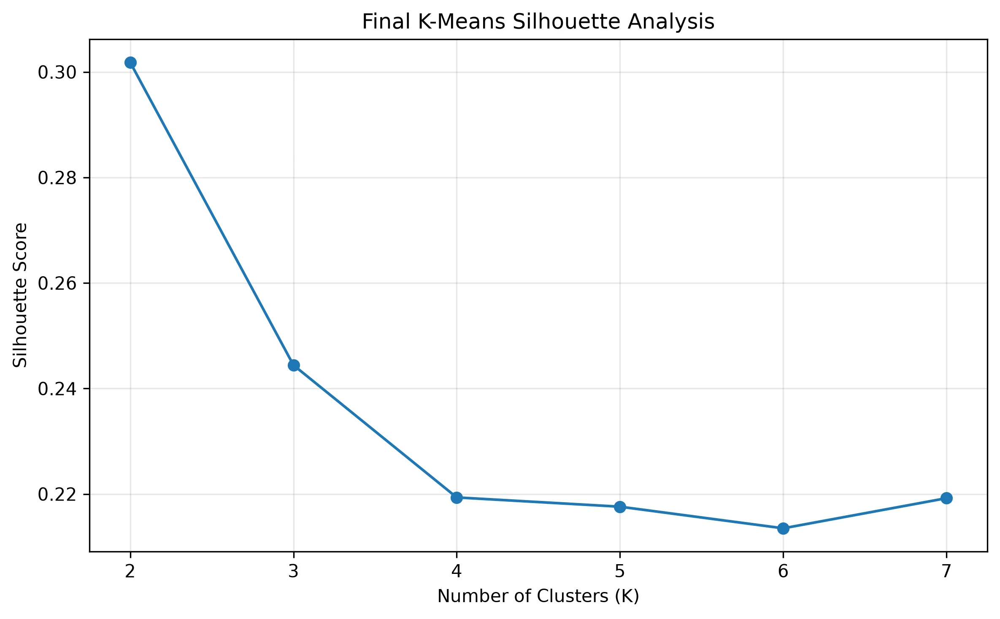

High-Value Active
42.5% of purchasing customers drove 77.9% of revenue. They ordered more frequently and had shorter average time since last purchase.
77.9%REVENUE CONTRIBUTION
A closer look at NovaMart — an analytics platform designed to turn purchasing patterns into meaningful segments, grounded AI insights, and business decisions.
From raw records
to a clearer picture.
 01 / THE FINAL DASHBOARD
01 / THE FINAL DASHBOARDTHE BUSINESS CONTEXT
Transaction totals tell us what happened. They don't always tell us which customers behave alike, who drives revenue, or where a targeted business strategy might help.
I approached NovaMart as a practical analytics challenge: build a reliable view of customer behaviour, segment customers based on what they actually do, and present findings that someone without a technical background could use.
How can purchasing data help a business understand its customer base and identify more focused retention and reactivation opportunities?
FROM DATA TO DECISIONS
The work connects data storage, customer-level metrics, machine learning, AI interpretation, and a business-facing dashboard.
Created customer-level metrics from completed orders, including revenue, order frequency, average order value, recency, category breadth, and average discount. The analysis covers 19,738 customers with a completed purchase.
Applied log1p transforms to skewed variables and standardized six behavioural features. Return rate was excluded from the final clustering features after it disproportionately shaped an exploratory cluster, but retained for descriptive reporting.
I evaluated models from K=2 to K=7. K=2 had the highest silhouette score (0.3018), but K=3 (0.2444) separated lower-engagement customers into two more actionable groups: higher-spend lapsed customers and lower-value discount-oriented customers.
This is a trade-off, not an accuracy win: the three-cluster model has a lower silhouette score, but offers more useful distinctions for separate business strategies.

The most important insight wasn't simply that customers could be clustered. It was how differently each segment contributed to the business.
The High-Value Active segment generated 77.92% of historical completed-order revenue.
Source: processed segment profiles42.5% of purchasing customers drove 77.9% of revenue. They ordered more frequently and had shorter average time since last purchase.
This group had the highest average order value ($468.81), yet 46.1% had not purchased for at least 365 days.
21.9% of purchasing customers contributed 3.6% of revenue and showed the highest average discount usage.
These are descriptive observations from synthetic historical data; they do not establish causes, predict churn, or prove any intervention will work.
FROM FINDING TO ACTION
Segmentation is useful when it changes the decisions a team considers. These are proposed experiments, not implemented campaigns or demonstrated business gains.
Monitor purchase recency and test timely, relevant retention outreach for customers whose activity is declining.
For higher-spend lapsed customers, evaluate whether targeted outreach improves reactivation compared with a control group.
For lower-value, discount-oriented customers, test promotion effectiveness while monitoring order economics and repeat purchase behaviour.
Rather than sending the same campaign to everyone, a business could use the segments to form testable, customer-specific hypotheses.
Cloud data, transparent modelling, grounded language-model interpretation, and a dashboard designed to help answer real business questions.
Ask NovaMart translates a business question into SQL, checks its structure and permitted tables, runs a BigQuery dry run, and then uses the actual query results to produce an answer.
Segment insights are generated from aggregated metrics rather than raw individual customer records. The interface also exposes generated SQL and underlying results for inspection.
Explore the implementation ↗Generated SQL is limited to read-only queries, checked against an allowlist of tables, screened for multiple statements, and dry-run before execution. This is a prototype safety layer, not a production-grade SQL parser.
The platform uses synthetic data, descriptive clustering, and historical observed revenue (not predictive customer lifetime value). Future production work would require stronger SQL parsing and access controls, automated tests, cost limits, and monitoring for segment drift.
NovaMart is a demonstration of end-to-end analytical thinking: from raw data and modelling trade-offs to an accessible business intelligence experience.